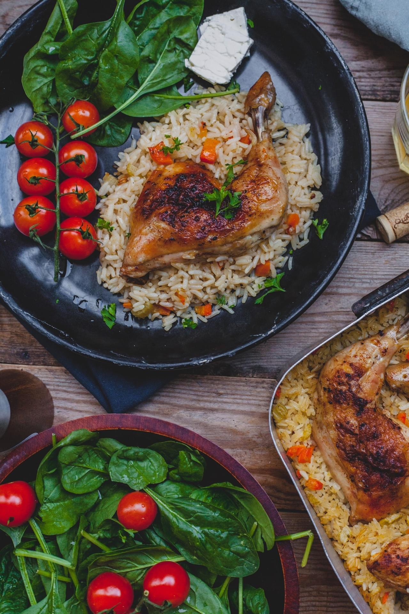

Chicken and rice

Ingredients
- 6 pieces of shicken skin on bone, cleaned and patted dry
- 3 cups rice
- 6 cups chicken broth or water
- 2 carrots peeled and chopped finely
- 2 stalks celery chopped finely
- 2 onions chopped finely
- 2 cloves garlic minced
- 4 tbsp of olive oil
- 2 tbsp butter
- Salt and Pepper to taste
Chicken Rub Mixture
- 3 teaspoons paprika
- 2 teaspoons dried thyme
- 2 teaspoons garlic powder
- 2 teapsoons salt
- 1 teaspoon onion powder
- 1 teaspoon black pepper
Directions
- Preheat oven to 350 degrees F
- Once chicken is cleaned and dry, rub chicken with the spice mixture and set aside
- Heat a large skillet to medium high, add 2 tbsp olive oil and brown the chicken on both sides for a few minutes each. This is not cook them. Don't overcrowd pan.
- In a medium size pot, heat up butter, 2 tbsp olive oil, add garlic, onions, veggies and saute at medium heat for about 10 minutes. Add broth and any pan juices. Once heated through and about to boil, pour the whole mixture into your baking dish.
- Place the chicken over the rice and broth, cover with foil and bake for 35 to 40 minutes. Remove foil and bake anothe 10-15 minutes or until all liquid has evaporated, rice is tender, and both chicken and rice is golden brown.